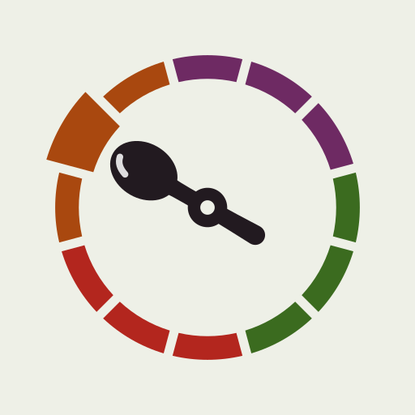
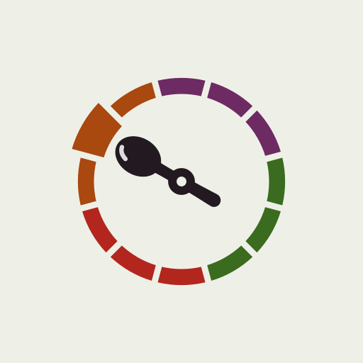
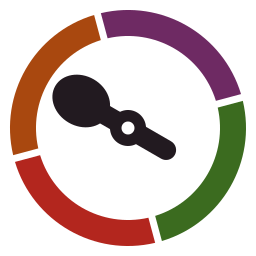
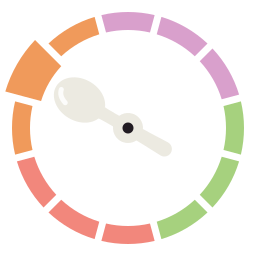
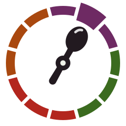
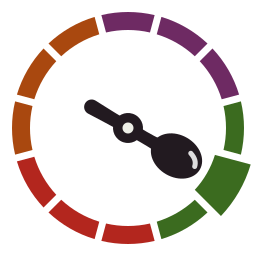
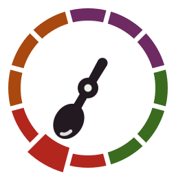
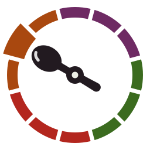
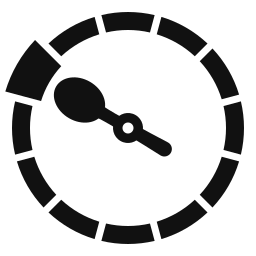

Icône et emblème
Douze segments, un par mois, aux couleurs de leur saison ; une cuillère pour aiguille, qui montre le mois en cours. Le segment du mois s’épaissit. La saison et la recette en un seul geste, lisible à 16 px et en une couleur.



Recettes de saisonOnglet du navigateur
Rail, en sombreSous l’icône, le nom court « De saison ». L’icône d’écran d’accueil est figée sur octobre (10 h, la pose classique des cadrans). Dans l’app, le logo du menu et celui de l’écran de lancement montrent le mois en cours. En dessous de 32 px (onglet du navigateur), une version simplifiée : quatre arcs de saison, cuillère plus épaisse.
Dans l’app, la cuillère suit le mois




